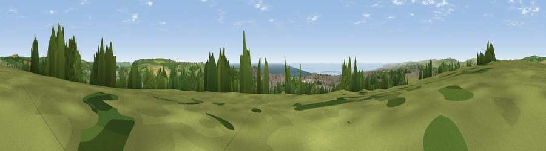

Hollingbury Castle
#3291 in England · top 17% of its area beats it · near PatchamThe view, rendered

A 360° render of this exact spot computed from the terrain model, tree cover and land cover — summer colours, afternoon light, calibrated against photographs of famous viewpoints. Real trees, hedges and buildings will differ in detail.
The panorama
Grey silhouette: terrain skyline in each direction (720 bearings, Earth curvature and refraction included). Dashed green: skyline with trees (+15 m) and buildings (+8 m) as obstacles. Blue strip: how far the ground is visible on each bearing.
Where the view opens
Wedge length = distance to the farthest visible ground on that bearing (vegetation-aware). Rings at 10, 25 and 50 km.
What fills the view
26% grassland · 26% built-up · 25% woodland · 14% water · 8% cropland
Angular shares of the visible panorama (visual magnitude), not map area. Landscape diversity 0.67 (0–1 Shannon).
Key numbers
More beautiful places nearby
The staircase of upgrades: each row has a higher view potential than everything closer. Driving times are estimates from straight-line distance, calibrated against real road routing — check an actual route before setting out.
| Place | Direction | Drive | Score |
|---|---|---|---|
| Viewpoint near Roedean | SSE · 5 km | ~10 min | 74.1 |
| Ditchling Beacon | NNE · 5 km | ~12 min | 81.8 |
| Fulking Hill | WNW · 8 km | ~16 min | 82.2 |
| Viewpoint near Firle | E · 14 km | ~25 min | 83.8 |
| Viewpoint near Firle | E · 16 km | ~28 min | 85.4 |
| Firle Beacon | E · 16 km | ~29 min | 88.9 |
| Viewpoint near Niton | WSW · 88 km | ~113 min | 89.2 |
| Viewpoint near West Bexington | W · 178 km | ~199 min | 89.5 |
50.85506, -0.12302 · source: dobih hill · position refined by local search. Computed location — check access rights before visiting.